Comments
Comments are the primary feedback mechanism provided by Swarm. Comments can be made on files in a review, on any lines of any text file in a review, and on jobs.
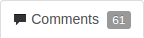 Access the comments for a review, or job, by clicking on the Comments tab. The number of open (non-archived comments) is displayed in the tab.
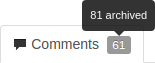 If you hover your mouse over the comment count, a tooltip is displayed showing how many comments are archived. See Archiving comments for details.
Tasks
Flagging comments as tasks is a lightweight workflow within a review that helps authors and reviewers prioritize review feedback. Any comment on a code review can be flagged as a task, indicating to a code review's author that the described issue needs to be addressed, and that the review is unlikely to be approved without a fix.
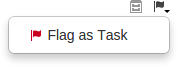 To flag a comment as a task, check the Flag as Task checkbox when posting a comment, or click the flag icon in the upper right of an existing comment and select Flag as Task in the drop-down menu.
Note
If you do not have permission to archive comments, you do not have permission to flag comments as tasks. Anonymous users never have permission to archive comments, and can only view current task states.
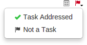 Once a comment is flagged as a task, it is considered to be an open task. Clicking the red flag icon displays a drop-down menu with the following options:
-
Task Addressed: usually used by the review's author to indicate that the noted issue has been fixed.
-
Not a Task: used to correct comments that have inappropriately been flagged as tasks.
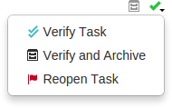 A comment with a green check indicates that the task has been addressed. Clicking the green check displays a drop-down menu with the following options:
-
Verify: usually used by the comment author, or other reviewer, after checking that the issue is indeed fixed.
-
Verify and Archive: used to both indicate that the issue has been fixed, and to archive the comment so it is hidden from view. Archived tasks, whether they are open, addressed, or verified, are not included in the task counts for the code review.
-
Reopen task: used when an update to the review does not resolve the noted issue, or to correct an inadvertent task verification.
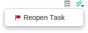 A comment with a blue double-check indicates that the task has been verified. Clicking the blue double-check displays a drop-down menu with the following option:
-
Reopen Task: used if the issue needs further work post-verification, or if verification was made inadvertently.
 A summary of comments flagged as tasks and their various states appears
below the code review's description, beside the reviewers area. Archived
comments that are flagged as tasks are not included in the summary.
A summary of comments flagged as tasks and their various states appears
below the code review's description, beside the reviewers area. Archived
comments that are flagged as tasks are not included in the summary.
Like many of Swarm's features, tasks are merely advisory. Flagging a comment as a task provides visual indication that there is an identified issue, but Swarm does not restrict any operations for tasks in any state. A warning is displayed should you attempt to approve or commit a review via the Swarm UI that has any open tasks (that are not archived):
Comment features
Emoji
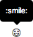
Swarm comments support Emoji
short-hand; when you save a comment, emoticon text like
:smile: is displayed as:
.
Hover your mouse over an Emoji emoticon to see a tooltip displaying the
text short-hand for the emoticon.
Tip
For more information on Emoji, see Emoji at Wikipedia. Emoji emoticons are listed in the Emoji Cheat Sheet.
Links in comments
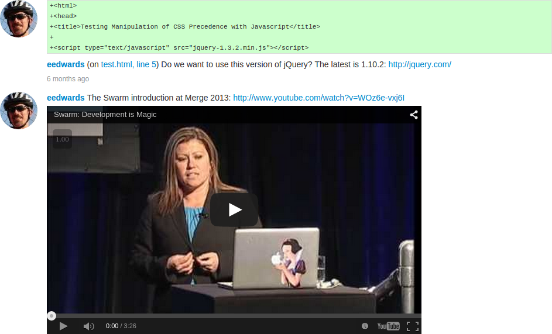 Whenever you include a URL in a comment, it is automatically made into a link. If the link points to an image, or a YouTube video, that resource is displayed at the end of the comment.
Liking comments
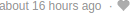 As an authenticated user, you can like a comment by clicking the muted heart icon beneath a comment.
When you like a comment, a notification is sent to the comment's author, and the heart icon becomes red to indicate that you have liked the comment.
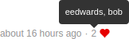 If a comment has one or more likes, a count of the likes appears before the heart icon. A tooltip appears when you hover the mouse over the like count displaying the usernames of everyone that has liked the comment.
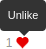 Click the heart icon again to unlike a comment.
Note
You cannot like/unlike a comment that has been archived.
Comment attachments
Arbitrary files can be attached to comments. This is useful for sharing documents that are helpful in code review, such as screenshots of error conditions, reference code, etc.
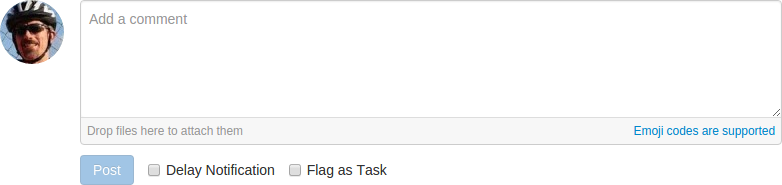 Swarm must be configured to enable comment attachments. Once the configuration is complete, the comment area adds a note Drop files here to attach them.
To attach a file, simply drag it from your desktop or file browser and drop the file onto the comment area. Multiple files can be attached to a comment, either one at a time, or by dragging a group of files in one go. However, uploading a folder of files is not supported.
When you let go of the file (or files), the upload to Swarm starts immediately, and a progress bar for each file is displayed below the comment area with green bars indicating completed uploads and blue bars indicating uploads in progress:
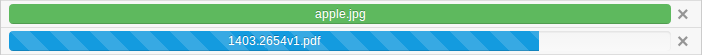
Before you post your comment, if any files already attached should be removed, click the to the right of the attached file you wish to remove.
After you post your comment, a list of attached files appears below the comment text. The list includes the filename and file sizes for each attached file. When you view your comment on the Comments tab, Swarm displays an image preview for any attached images.

Comment context
When comments are added to files in a review, on lines that have been changed, Swarm records several lines of context before the line receiving the comment. This helps makes sense of the comments should later changes remove those lines.
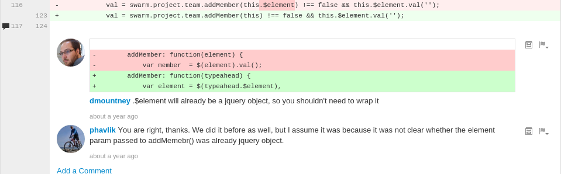
Each comment associated with that line has a record of the context, but only the first comment displays that context.
Delayed notifications
Delayed notifications allow reviewers to add or edit comments as they progress through a review, but prevent notifications from being sent until their review effort is complete. Any delayed notifications are rolled up into a single email notification when the reviewer turns off delayed notifications.
Whenever Delay Notification is checked, batch mode is enabled and the notification for any new or edited comment is delayed; no email is sent. Swarm remembers that you have clicked Delay Notification; you do not need to click it for each comment you post.
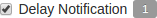 When there are delayed notifications, Swarm displays their count.
Batch mode ends when a new or edited comment is saved with Delay Notification unchecked. Swarm then sends a single email notification containing all previously delayed comment notifications plus the most recent new or edited comment.
Note
There is no expiry mechanism; delayed notifications are delayed indefinitely until Delay Notification is unchecked.
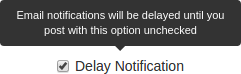 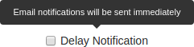 Hover your mouse over Delay Notification to see a tooltip that indicates the current state.
Note
Delayed notifications are available only for comments on reviews; comments on commits or jobs produce notifications immediately.
Commenting on a changelist or review
-
Visit the changelist's or review's page.
-
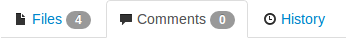 Click to view the comments tab.
-
Add your comment in the provided text area.
Also see Comment attachments above.
-
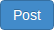 Click .
Commenting on a specific line in a file
-
Visit the changelist's or review's page.
-
 Click to view the file tab.
Click to view the file tab.
-
Click a line you want to comment on. The comment text area appears.
-
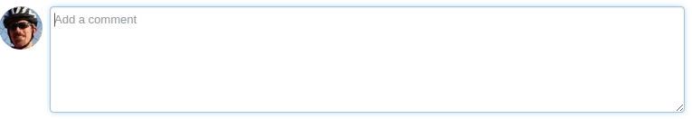 Add your comment in the provided text area.
-
Click .
Commenting on a file in a changelist or code review
-
Visit the changelist's or review's page.
-
Click to view the file tab.
-
If there are multiple files, click the file you want to comment on to expand its view.
-
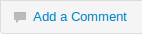 Click the link in the footer of the file's display.
-
Add your comment in the provided text area.
-
Click .
Note
You can use @mentions in comments. An @mention includes the specified user in the review, and they will receive a notification whenever there is an update to the review.
Editing comments
For any comment that you have created, you can edit its contents:
-
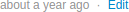 Click the Edit link.
-
Adjust the comment content, including adding new attachments or removing existing attachments.
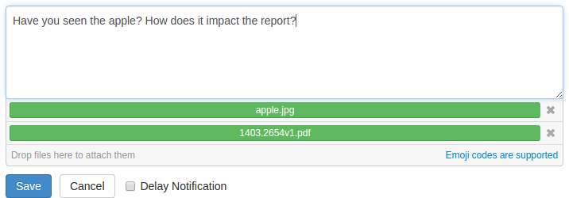When you attempt to remove an attachment, it is not immediately removed but marked for removal; the attachment's presentation becomes muted and the removal X icon is replaced with a Restore icon.
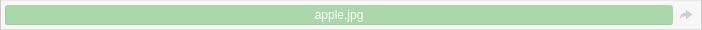Before completing your edits to the comment, if you do not wish to remove attachments that are marked for removal, click the Restore icon; the Restore icon is replaced with the removal X icon, and the attachment's presentation is no longer muted.
-
 Click . The edits to the comment text are
saved, any new attachments are saved, and any attachments marked for
removal are removed. Swarm also adds
Click . The edits to the comment text are
saved, any new attachments are saved, and any attachments marked for
removal are removed. Swarm also adds (edited)to the comment's timestamp.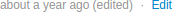At any time, you can click the Cancel to cancel editing of the comment. The original comment text is reinstated and any existing attachments are retained. Any text edits or uploaded attachments are lost.
Whenever a comment is edited, Swarm sends a notification to everyone involved in the review, including the author and reviewers, but not to the editor of the comment.
Note
Swarm does not provide a mechanism to see older versions of edited comments.
Archiving comments
As a code review progresses, comments made on earlier versions of a file may no longer be pertinent. If left unattended, comments may accumulate until it is difficult to determine which comments are still relevant and which comments have been addressed.
-
 Click the file drawer icon at the top
right of a posted comment to archive it.
Click the file drawer icon at the top
right of a posted comment to archive it.
Archived comments are normally hidden from view. When archived comments exist, a box appears showing the number of archived comments. Click the box to toggle the presentation of all archived comments.
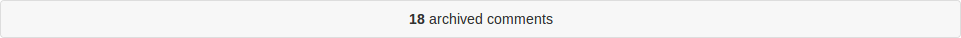
Restore comments
A closed comment may be restored.
-
Click the archived comments box to display all archived comments.
-
Locate the comment you want to restore
-
Click the arrow icon in the top right of the comment to restore it.